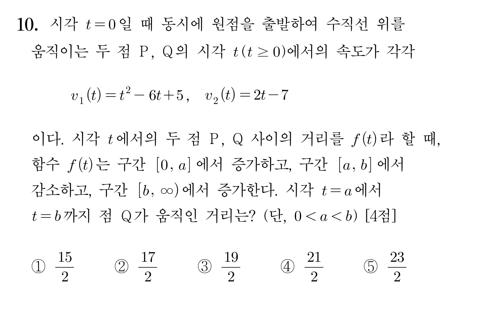
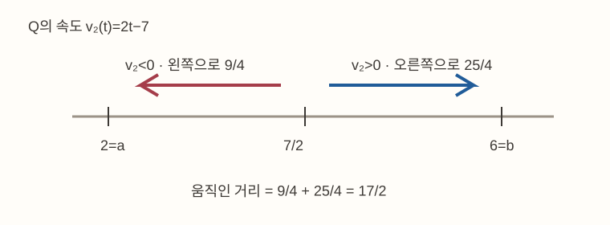

대표님 저장 계정: soomin020114@gmail.com · 위에 다른 이메일이 보이면 ‘계정 바꾸기’를 누르세요. 필기는 그대로 남습니다.
갤탭: 같은 노트 맨 위 문제에도, 아래 풀이 여백에도 S펜으로 바로 쓰세요. 손가락·손바닥은 필기에 반영되지 않습니다. 오른쪽 스크롤 띠나 ‘손가락 스크롤 모드’로 한 장의 노트를 위아래로 움직일 수 있습니다.

같은 노트 위쪽 문제를 다시 읽거나 화면을 움직인 시간도 필기 공백에 들어갑니다. 긴 공백만 보고 풀이를 못한 시간으로 판단하지 않습니다.
문제와 풀이가 같은 노트에 있습니다. 문제 문장 위에 밑줄·표시를 하고, 바로 아래 여백에서 그래프와 계산을 이어 쓰세요. 쓰고 지운 획은 모두 보관됩니다.
시각 t=0에 두 점 P,Q가 원점에서 출발해 수직선 위를 움직입니다. t≥0에서 각각의 속도는 아래와 같습니다.
v₁(t)=t²−6t+5
v₂(t)=2t−7
두 점 사이 거리 f(t)가 [0,a]에서 증가, [a,b]에서 감소, [b,∞)에서 증가합니다. 시각 a부터 b까지 Q가 실제로 움직인 거리를 구하세요.
[4점] ① 15/2 ② 17/2 ③ 19/2 ④ 21/2 ⑤ 23/2
a,b는 두 점 사이 거리의 증감 경계입니다. 마지막 답은 Q의 이동거리라, Q가 중간에 방향을 바꾸는지 확인해야 합니다.

함수 그래프를 억지로 그릴 필요는 없습니다. 5/7에서 2, 7/2, 6을 적은 시간선과 방향 화살표를 그려 Q가 되돌아온다는 사실을 보여주세요.
승주형 원문의 절댓값 교정은 일반 글씨이고, 실제 볼드는 C와 출발 조건을 되짚는 6문장입니다. 원문의 −2t² 계산과 ‘정적분만 가능’ 설명은 수학 오류라 정확한 풀이에 따라 쓰지 않습니다.
원문 수식: x₁(t)=t³/3−3t²+5t+C; x₂(t)=t²−7t+C; f(t)=x₁(t)−x₂(t)
원문에는 x₁−x₂를 t³/3−2t²+12t로 적은 계산 오류도 있습니다.
붉은 줄은 승주형의 실제 볼드입니다. 정확한 풀이에서는 부정적분 후 초기 조건으로 C를 정해도 됩니다. 원문 수학 오류는 보관하고 안내에서 보정했습니다.